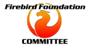

<table width="90%">
<tr><td>
<font face="Verdana" size="-1">
<span style="background-color:#696969;color:#ffffff"><h3>&nbsp;Committee Meetings &nbsp;</h3></span>


<table> 
  <tr> 
    <td width=149></td>
    <td><h2>Bi-monthly meeting, October 2004</h2></td> 
  </tr>
  <tr>
    <td align="center" valign="top"><hr size=1><h4>PREAMBLE</h4></td>
    <td><hr size=1>
This time, we are going to attempt to complete our meeting in reasonable time.
<ol>
<li><b>AGENDA ITEMS</b> &nbsp; If you have an item that you want discussed, please send it to the secretary (helebor at firebird-books dot net) <i>before the meeting is due to start</i>.  You do not have to formulate a motion for voting in order to present a proposal.  Simply decide on a title and provide brief details of the matter to be discussed and why you think it is important.
<p>
<li><b>VOTING</b> &nbsp; was the main source of problems last time.  Mark has undertaken to monitor the ffvote server this time.  However, if the server goes down when a matter needs to be put up for voting, we will deal with that matter by email.  The Chairman will decide whether a proposal should be posted to ffvote or by email.  Once that decision is announced, it is not to be changed arbitrarily by someone else, even if the voting server gets back into service before the email ballot finishes. <i>There is to be NO duplication of ballots.</i>
<p>
If you see an email with PLEASE VOTE in the subject, and it is *not* a notice to go and cast your vote at the web interface, you should REPLY ONLY ONCE with &quot;Aye&quot; (or &quot;Yes&quot;), &quot;No&quot; or &quot;Abstain&quot;.  If you vote No or Abstain, you may optionally add a comment.  Other than that, simply sign your name and add no further comment. 
<p>Do not vote on matters that do not ask you to vote. Do not reply to PLEASE VOTE notices that direct you to cast your vote at the ffvote web interface.
<p><font color=red>Do not reply to threads on voting forms.</font><p>
<li><b>PROPOSALS FOR BALLOT</b> &nbsp; You may post a new proposal into ffvote if the Chairman invites you to do so. If you want help with the wording, please email me (helebor at firebird-books dot net) with your version of the proposal and I will tidy it for you and send it back for you to post yourself. 
<p>The Chairman, Secretary and Vice-President (if he is not the Chairman) may post proposals on behalf of other people.  The rest of you, please post proposals only on your own behalf.
<p>
<li><b>PROMPTNESS</b> &nbsp; Proposals will go through several stages. At the point where the Chairman invites you to post your proposal, or directs me (Secretary) to do so, all discussion is complete.  When the motion is ready for voting, it will appear in the list with PLEASE VOTE in the subject. Cast your vote promptly (within 24 hours).  The Chairman or the Secretary will close the ballot after 24 hours or when there are 10 positive votes, whatever comes sooner. The person who closes the ballot, or who closes the discussion of a matter that does not go to a ballot, will report that the matter is closed.  Once a matter is closed, there will be no further discussion.  Please do not respond to late messages on any closed matter.  
<p>
<li><b>SUMMARIES</b> &nbsp; At the July/August meeting we decided by consent to make it the responsibility of the presenter of a matter, whether it goes to ballot or not, to summarise the matter and the discussion.  Please make a real effort to do this.  Make it a SUMMARY, not a blow-by-blow recapitulation of the discussion.  When you post the summary to the list, make SUMMARY the first word in the subject and follow it with the Agenda item number, e.g. 2004-10-99. Inside the summary, if the matter involved voting, cite the Motion number (ffvote Question number) if there is one.<p>
<table bgcolor="cornsilk" cellpadding=4 border=1>
  <tr><td>
If it is a struggle for you to manage the English, please ask the list for a volunteer to help you. 
  </td></tr></table>
</ol>

People, if you would really make a big effort to observe these controls, we can avoid the craziness of last time and get through our business promptly and, hopefully, in a way that keeps the meeting interesting for all of us.  Let's aim to be finished inside one week.
<br>
Helen Borrie, Secretary

    </td>
  </tr>

  <tr>
    <td align="center" valign="top"><hr size=1><h4>AGENDA</h4></td>
    <td><hr size=1> 


<dt>
2004-10-01. Minutes from last meeting (<a href="#minutes_2004_julyaug">July/August 2004</a>)
<p>
<dt>
2004-10-02. <a href="#financial">Financial Summary</a>
<p>
<dt>
2004-10-03. <dt>
Formalising procedures for grant applications and reviews. 
<dd> 
Details: P. Shrimpton has tabled a <a href="index.php?id=grant_procedure.html">revised discussion paper</a> on formalising the procedures for grant applications and reviews.  Committee members are expected to comment and, if possible, reach a decision regarding these procedures.
<p>
<dt>
2004-10-04. Additional Allocation for Core Coding:  
<dd>
Details: &nbsp; Claudio Valderrama has indicated to the President that there are some crucial coding tasks required for Firebird 2 for which he could be available. It was suggested that an additional $1000 USD per quarter be allocated for this activity, for an initial period of six months.  Unlike Claudio's code scrutineering role (a separate issue), this grant would be subject to monthly reporting.
<p>
<dt>
2004-07-05. Review status of existing grants.
<dd>
Details:
<dd>  
Core Coding and Security:  Alex Peshkoff receives $250 per month, $150 of which is for approx. 40 hours of core coding and $100 for approx. 30 hours working on security issues and enhancements. Alex's grants were not reviewed last time because of delays in getting his report (ISP problems). 
<p>
<dt>
2004-10-06. Changes to the name of the foundation and rules.
<dd>
Details:  Because more than one month had elapsed since the decisions were made, we are required by statute to convene a further plenary meeting in order to obtain re-authorisation from the membership for the name and rule changes that were resolved at the AGM.  To discuss:  shall we convene a Special General Meeting or defer the matters until the next AGM?
<p>
2004-10-07. Apparently unclear or conflicting rules.
<dd> 
Details: Messrs Vinkenoog and Shrimpton to report on progress finding the points in the Rules that need clarification or adjustment. 
<p>
<dt>
2004-10-08 Grantee reports 
<dd><a href="../../index.php?op=devel&sub=netprovider&id=dotnetff200409">.NET Provider</a> (Carlos Guzmán Álvarez)
<dd><a href="../../index.php?op=devel&sub=odbc&id=odbcff200409">ODBC/JDBC</a> (Vladimir Tsvigun)
<dd>Other reports still to come
<p>
<dt>
2004-10-09. Status re. the Registration of the Firebird trademark.
<p>
<dt>
2004-10-10. Any Other Business
<hr size=1>
    </td>
  </tr> 
  <tr>
    <td align="center" valign="top"><a name="minutes_jan"><hr size=1><h4>Minutes<br> July/Aug 2004</h4></td>
    <td> 

<center>
<b>Minutes of a meeting of the Committee
of the FirebirdSQL Foundation 
convened 5 July 2004 in the FFMembers list.</b></center>
<p>
Committee members present: 
Paul Beach (Chair), 
Helen Borrie (Secretary), 
Nando Dessena, 
Lucas Franzen, 
Dmitry Kuzmenko, 
Sean Leyne, 
Philippe Makowski, 
Alexander Nevsky, 
Mark O'Donohue, 
Phil Shrimpton, 
Martijn Tonies, 
Paul Vinkenoog (Vice-President). 
<p>

The meeting was opened by Paul Beach on July 5, 2004, Paul Beach presiding.

2004-07-01 Minutes of the Committee meetings from January (on-line) and May (at Fulda, Germany) were presented and both were accepted.
<p>
<b>Matters arising from the May Minutes </b>
<p>  
M. Tonies submitted a correction to the list of auction winners at Fulda: "Johannes Rupprecht paid E160 for Log Manager software..." add "and Database Workbench for Firebird."
<p>
P.Vinkenoog stated that the Fulda meeting was not a legal meeting because it did not conform to the rule that committee meetings be conducted by email. Discussion ensued in General Business as to whether it would be a good thing to include in a forthcoming Special General Meeting a proposal to enable live Committee meetings to be convened at the annual Firebird conference. 

P. Vinkenoog objected to the idea because it could never be assumed that all of the Committee would ever be able to attend the conferences.
<p>

2004-07-02 The financial summary report was presented on behalf of the Treasurer. The report was accepted and there were no matters arising. 
<p>
2004-07-03 Newsletter.  Nobody volunteered to take over Set's former responsibility for the Foundation newsletter but H. Borrie offered to act as "point" for collating content and P. Makowski and P. Vinkenoog agreed to assist. 
<p>
2004-07-04 Committee was asked to consider allocating a grant of 100.00 Euros per calendar month, from July-01-2004 for development and support of Firebird .NET drivers, recipient Carlos Guzman to present quarterly progress reports. Carlos spends 2-3 hours a day on the driver and support currently.
<p> 
Motion 115 (H.Borrie, P.Vinkenoog) "That a grant of 100.00 Euros per calendar month be allocated for development and support of Firebird .NET drivers and that Carlos Guzmán Álvarez be the recipient.  The grant shall be paid quarterly in advance, starting at 1 July 2004 and shall be reviewed after six months. The recipient shall be required to submit a quarterly status report to the committee" was carried.
<p>
2004-07-05 Committee was asked to consider allocating a grant of USD 200.00 per calendar month, from July-01-2004 for development and support of Firebird ODBC/JDBC driver, recipient Vladimir Tsvigun to present quarterly progress reports. Vladimir spends 30-60 hrs/month working on the driver and support, currently. 
<p>
Motion 116 (H.Borrie, P.Vinkenoog) "That a grant of USD$200.00 per calendar month be allocated for developing, maintaining, documenting and releasing the ODBC driver for Firebird and that Vladimir Tsvigun be the recipient.  The grant shall be paid quarterly in advance, starting at 1 July 2004 and shall be reviewed after six months. The recipient shall be required to submit a quarterly status report to the committee" was carried. 
<p>
2004-07-06 Committee was asked to consider approving the extension of grant funding for the central coding and coordination role, currently performed by Dmitry Yemanov, from $450 to $900 per month from August 1, effectively enabling Dmitry to engage in the role for his full working week.  The additional funding would be met by accepting a further sponsorship commitment from Broadview Software of $450/month, shortfall (if any) to be underwritten by IBPhoenix.  Requests by several members asked for guarantees (term of grant, notice period).   
<p>
Motion 114 (H.Borrie, P.Vinkenoog) "That the grant to assist project development and coordination, of which Dmitry Yemanov is currently the recipient, be extended for a further year at the current level of at least USD$450 per calendar month and that Dmitry Yemanov shall continue to be the recipient" was carried.
<p>
Motion 121 (H. Borrie, P.Beach) "That the committee accept with gratitude the offers by Broadview Software and IBPhoenix, respectively, to fund and underwrite the sponsorship of a further monthly grant of USD$450 with respect to Dmitry Yemanov's project development and coordination activities, to be effective from 1 August 2004" was carried.
<p>
Motion 120 (H.Borrie, P.Beach) "That, in the event that the committee decides to withdraw, reduce or reallocate the funding referred to in proposals 2004-07-6a or 2004-07-6b [114 and 121], the incumbent grantee shall be given notice of not less than one calendar month;  and that, in the event that the incumbent grantee decides to withdraw as the grantee, he shall give the committee notice of not less than one calendar month" was carried.
<p>
2004-07-07 Committee considered suggestion by D. Yemanov to make a small amount of funding available by way of a consultancy fee for any time given by Oleg Loa and/or Dmitry Kuzmenko assisting in the merger of Yaffil code into Firebird codebase. 
<p>
Motion 112 (H.Borrie, P.Vinkenoog) "That the committee agrees in principle with the suggestion by Dmitry Yemanov to make an unspecified, small amount of grant funding available to compensate the former principals of Yaffil, should their consultation be required to effect the merger of Yaffil enhancements into the Firebird code tree" was carried. 
<p>
2004-07-08 Committee was asked to consider allocating a grant of USD 500.00 per calendar month, from August-01-2004 for development and operational support of the QMTest QA framework, recipient Pavel Cisar. Pavel is expected to commit nine days per month to the project and to present monthly progress reports. 
<p>
Motion 122 (H.Borrie, M.Tonies) "That grant funding of USD$500 per calendar month be allocated for developing the QA infrastructure and making QMTest operational and that Pavel Cisar be the recipient.  The grant shall be paid quarterly in advance, starting at 1 August 2004 and shall be reviewed after six months. The recipient shall be expected to commit at least nine DAYS per month to the project and shall submit a monthly status report to the committee" was carried. 
<p>
Pavel's latest <a href="../../index.php?op=devel&sub=qa&id=qaff200407">status report on the QA work</a> was received. 
<p>
2004-07-09 Review of other grants.  
(a) Committee was asked to consider continuing the grant of USD 150.00 for core coding, and USD 100.00, per calendar month, for security enhancements, recipient Alex Peshkov. 
<p>
Motion 113 (H.Borrie, P.Vinkenoog) "That grant funding of $250 per month for core coding and security enhancements, currently granted to Alex Peshkov, shall continue for two months and shall be reviewed at the next committee meeting.  Alex shall be required to provide a summary report of his activities to date and a projection of future funding requirements" was carried. 
<p>
Alex's latest <a href="../../index.php?op=devel&sub=engine&id=securff200407">status report</a> on his work was received. 
<p>
(b) Committee was asked to consider continuing the grant of USD 500.00 per calendar month, for code scrutineering, recipient Claudio Valderrama. 
<p>
Motion 111 (H.Borrie, P.Vinkenoog) "That grant funding of $500 per month for code scrutineering, currently granted to Claudio Valderrama, shall continue for a further six months" was carried.
<p>
2004-07-10 Discussion around the idea of rotating chairmanship from meeting to meeting, a concept that appears to conflict with our rules (9.b). 
<p>
2004-07-11 A number of website issues on the Agenda were rolled into a related issue, a proposal to allocate funding for a makeover of the website, including recruitment of an active web team and documentation of the current P. Cisar content management tools.  H.Borrie had indicated to P.Beach that she would be available for approx. 33 hrs/mth for a 3-month project if suitable funding were allocate.  
<p>
Motion 110 (H.Borrie, P.Vinkenoog) "That grant funding of $500 per month for three months shall be allocated for a project to make over the Firebird web site and form a web team and that the grant recipient shall be Helen Borrie. Helen shall commit a minimum of 33 hours per month to this project and shall report monthly to the committee" was carried. 
<p>
2004-07-12, Changing name of the foundation: P.Vinkenoog and P.Shrimpton undertook to investigate the changes required in the Rules document. Similarly for 2004-07-13, Allowing Associate members on Committee and 2004-07-14, Apparently unclear or conflicting rules.
<p>
P.Vinkenoog identified changes to the following Rules: 
<ul>
<li>Change "FirebirdSQL Foundation" to "Firebird Foundation" in:
<ul>
<li>The header
<li>Rule 1 (name)
<li>Rule 2 (objectives)
</ul>
<li>In Rule 2 (objectives) he recommended changing "The FirebirdSQL Foundation" to "the Association".
<p>
<li>Rule 3l (three el)
<p>
After:
<blockquote>
 ii/ An Associate Member may be coopted into a sub-committee and shall
    at the discretion of fellow members of that sub-committee become
    eligible to vote on matters of process within that sub-committee
    excepting any financial matter.
</blockquote>
add:
<blockquote>
iii/ An Associate Member may be elected or appointed as a non-voting
    member of the Committee.
</blockquote>

<li>Rule 10b (ten bee)
<p>
Change:
<blockquote>
  The Committee shall consist of:
<ol type=i>
<li>the Office Bearers of the Association; and,
<li>at least three but no more than eleven other Members, each of
     whom shall be a Principal Member according to Rule 3.k...
</ol>
</blockquote>
to:
<blockquote>
  The Committee shall consist of:
<ol type=i>
<li>the Office Bearers of the Association; and,
<li>at least three but no more than eleven other Members, each of
     whom shall be a Member of the Association according to Rule 3...
</ol></blockquote>

<li>Rule 10f (ten ef)
<p>
Change:
<blockquote>
  Where leave of absence is granted under rule 10.e(i) the duties of
  the absent Member may be performed by another Principal Member...
</blockquote>
to:
<blockquote>
  Where leave of absence is granted under rule 10.e(i) the duties of
  the absent Member may be performed by another Member of the
  Association...
</blockquote>

<li>Rule 10g (ten gee)
<p>
Change:
<blockquote>
  Any casual vacancy occurring in the Committee (including Office
  Bearer) may be filled by a Principal Member...
</blockquote>
to:
<blockquote>
  Any casual vacancy occurring in the Committee (including Office
  Bearer) may be filled by a Member of the Association...
</blockquote>
<br>
** A matter arises from the change proposed above--Secretary

<li>I also found two other places where rules concerning associate members in committees have to be changed, but these are not covered by the "Associate Members in Committee" SR; they'll have to be picked up by the "unclear or conflicting rules" team.
</ul>

H.Borrie reported that government fees for the name change would be AUD 122 and for the rule changes AUD 33.  However, on consulting with the NSW Office of Associations re starting the process to register the name change, she was informed that none of the proposed changes, to the association name or to the Rules, was permitted currently.  Constitutional changes must be applied for within one month of the plenary decision. 
Therefore, a Special General Meeting would be required to re-authorise the decisions, or they should be deferred for re-authorisation at the next AGM.  
<p>
2004-07-15. Formalising procedures for grant applications and reviews. P.Shrimpton volunteered to take up G. Worboys' earlier proposal on this issue and freshen it up for discussion at the next meeting. 
<p> 
2004-07-16. Status re. the Registration of the Firebird trademark. H. Borrie reported that the Australian registration was now cleared and paid for.  There was discussion of how to proceed with registrations in other countries. It was agreed the matter of registration in the United States should proceed at the next meeting and that investigation of Madrid Protocol countries needed careful investigation, considering the expense and the relative benefits of registering in different countries. Ann Harrison is to be asked for a status report on applying for trademark registration in the United States.
<p>
2004-07-17. Other Business 
<p>
<ol type=a>
<li>The meeting discussed several ways to tighten procedures for meetings to keep things on track and close off matters promptly. 
<p>
2004-07-10 there was discussion around the idea of rotating chairmanship from meeting to meeting, a concept that appears to conflict with our rules (9.b). Subsequent discussion raised the idea of sharing some of the secretarial tasks, especially the task of summarising discussion topics during the course of meetings. 
<p>
<li>Mark O'Donohue re-raised his proposal to provide a "Commercial Support/Services" web page, linked from the main menu of the foundation subsite.  Members would request inclusion and would provide a small paragraph about the services/products they offer. The purpose would be to establish a place where people looking for Firebird-related skills could go to find people who have them. Mark though it would give members the opportunity to identify themselves as contacts, thus helping them to continue working in the Firebird area.
<p>
The proposal was discussed by several members, with opinion divided on the issue of prioritising according to the members' levels of financial contribution.  There was also disagreement about the need for or value of prescribing the layout rules for a web-page by committee resolution. A motion proposed by Mark was finally withdrawn for want of a seconder.
</ol>
The chairman closed the meeting at 10:25 a.m. GMT on August 12.
<p>
Helen Borrie<br>
(Secretary)

    </td>
  </tr> 


  <tr>
    <td align="center" valign="top"><a name="financial"><hr size=1><h4>Financial Summary</h4></td>
    <td><hr size=1> 

<font face="Courier">
<pre>
The following is the summary finance report for 2004.06.17 to 2004.09.16:
&lt;to come&gt;

Jason Wharton (Treasurer)
</pre>
</font>

    </td>
  </tr>

</table>

</td></tr>
</table>

